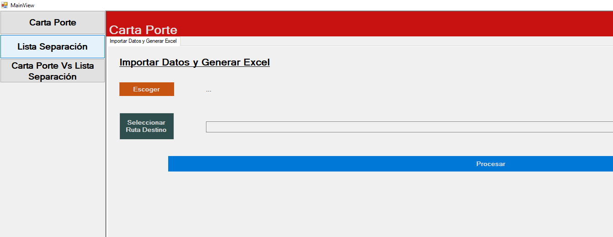
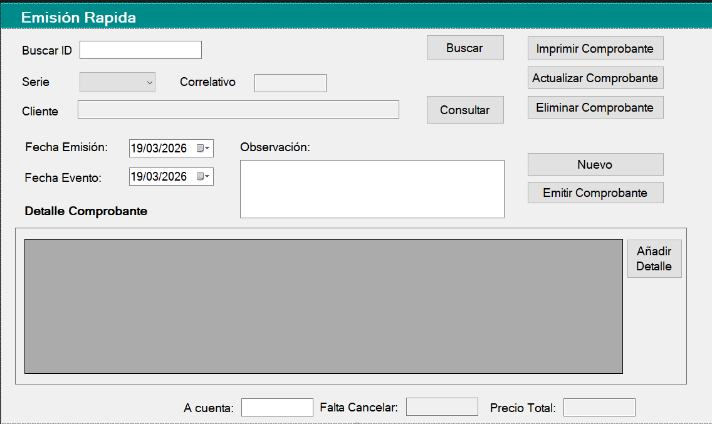
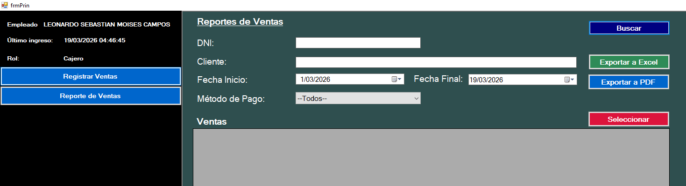

Desarrollador con experiencia en C#, SQL Server y aplicaciones de escritorio
Hola, soy Leonardo Sebastián Moisés Campos, desarrollador de software con más de 1 año y 7 meses de experiencia construyendo aplicaciones web escalables y robustas.
Trabajo principalmente con C#, SQL Server y Angular, enfocándome en crear soluciones eficientes, mantenibles y escalables.
Me apasiona el mundo de la programación porque creo que pequeñas soluciones pueden generar grandes impactos positivos.
Siempre estoy en constante aprendizaje, buscando mejorar mis habilidades y aportar valor en cada proyecto en el que participo.

Aplicación de escritorio para la gestión de las cartas aporte para la empresa TRANSPORTES Y SERVICIOS GELAI SAC
Tecnologías: C#, SQL Server
Ver en GitHub
Sistema para la optimización de la gestión de procesos de la empresa Ternos Vitarte
Tecnologías: C#, SQL Server
Ver en GitHub
Aplicación de escritorio para la gestión de ventas de la Bodega TEO.
Tecnologías: C#, SQL Server
Ver en GitHub